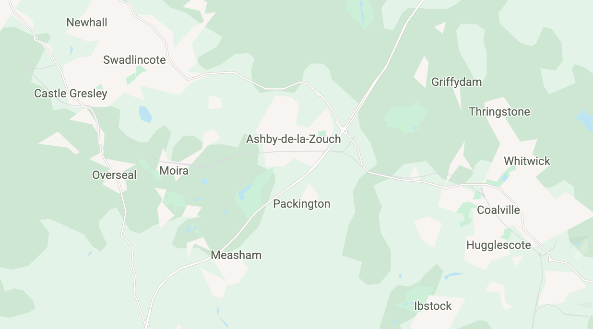
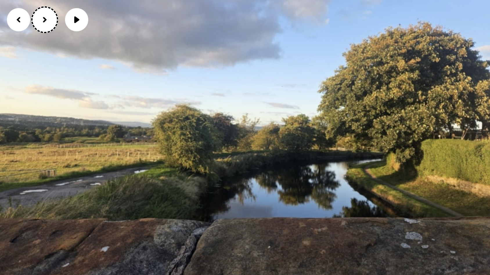

2.5.1 Pointer Gestures (A)
Users must be able to perform tasks with one finger and simple gestures.
What WCAG says:
All functionality that uses multipoint or path-based gestures for operation can be operated with a single pointer without a path-based gesture, unless a multipoint or path-based gesture is essential.
Check the official guidance for Understanding 2.5.1 Pointer Gestures
What this means
Users must be able to perform tasks without making gestures:
- that use more than one finger, like a two-finger pinch to zoom
- where the movement of the pointer along a specific path matters, like swiping or drawing
There are exceptions when a complex gesture is necessary for a task, like asking users to write their signature.
Why it matters
Some users are physically unable to perform complex gestures. Others may struggle to understand how to perform these gestures.
Alternative options should be provided so all users can access the content through simple gestures, like taps, double taps and long presses.
How to check
Check twice, once with a mobile touch device, and again with a mouse or trackpad.
Check:
- all functionality that uses multiple fingers can also be done with a single finger
- all functionality that relies on following a path can be done in an alternative way
How to test in detail for 2.5.1 Pointer Gestures
Common mistakes
Tasks require complex gestures
For example, a map where you must make a pinch gesture to zoom. There is no other way to zoom.
This would fail as users unable to make the pinching gesture could not use the map.
It could be fixed if users could also select ‘plus’ and ‘minus’ buttons to zoom in and out.

Good example
Tasks have multiple gesture options
For example, a carousel of images allows users to either swipe or select arrows to see the next image.
This would pass as users would not need to use complex gestures to perform tasks.

Related success criteria
- 2.5.4 Motion Actuation (A) requires that users must be able to perform tasks without needing to move their devices or make gestures at the screen.
- 2.5.7 Dragging Movements (AA) requires that users must be able to complete a task without having to make a dragging motion on their screen.
Last updated
This page was last updated in October 2026.